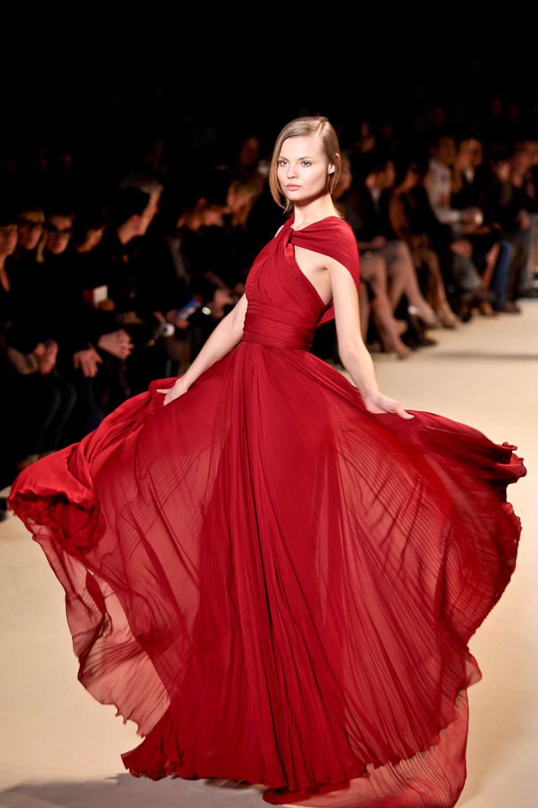
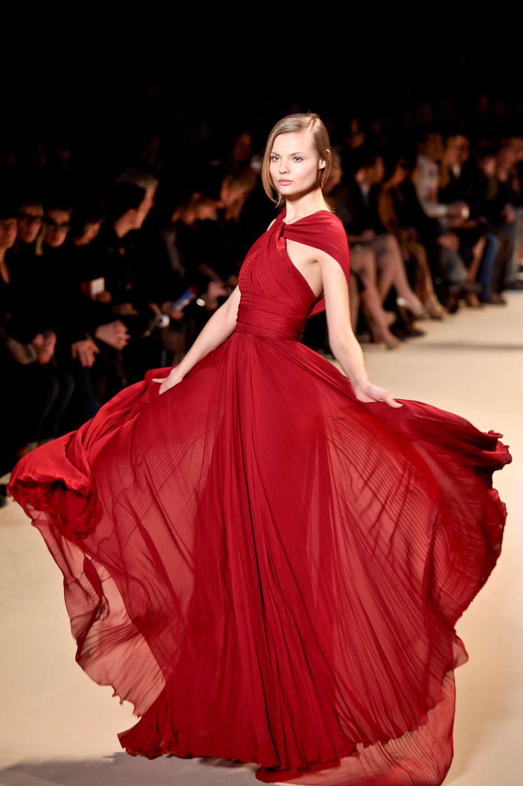

Fashion plays an important role in our daily lives. It’s nearly impossible to live a life without it. In fact, you’ll have a terrible life if you don’t know anything about fashion. Although it is important, you don’t have to be very good at it in order to succeed in life. Learning how to dress nicely is enough to make you fit in well within the society. The media has always been a part of what makes a cloth, hat, shoes, fashionable. Advertisements are just everywhere. In fact, almost all media companies focus on anything that has something to do with fashion. The lack of fashion has been a problem for a lot of people. Although some individuals don’t really care about what they wear, it’s the negative comments that we receive from other people that affects us. As a person, fashion is a part of our daily lives whether we like it or not. After all, looking good has never been a bad investment. Fashion also affects our lives by taking a good part of our budget. While looking good may sound harmless, it can actually give you headaches financially. Gearing up to look good can be quite expensive. In fact, you will be spending a lot of money if you want to maintain a good image. Purchasing fashionable outfits and accessories can ruin a person’s budget. While it’s not easy to manage a budget, adding more expenses to your expenditures can be a pain in the head. A lot of people are having a hard time financially because of their sense of fashion. While most of us would do fine with basic clothes, some people would spend hundreds of dollars for some really good outfits. Trends are often started when people love the way you dress. It doesn’t have to be elegant in order to be loved by the public. Sometimes, people love simple things because of many good reasons. Fashion doesn’t have to be expensive and elegant in order to be appreciated. We can always find gold in an average outfit as long as we know how to mix and match. Fashion affects our lives in various ways. It has its own way of reaching into our lives whether we like it or not. Normally, it’s hard to live a normal happy life without fashion. Although it provides benefits to us, it can also bring in more harm if we don’t know how to use it in our daily living. As a person, you need to know how to handle fashion. Those who don’t know how to manage it, will find it difficult to live with a sense of fashion. After all, looking good and staying that way isn’t easy at all. It requires you to spend money, time, and effort to stay good-looking.
 

Fashion is a form of self-expression and autonomy at a particular period and place and in a specific context, of clothing, footwear, lifestyle, accessories, makeup, hairstyle, and body posture.In its everyday use, the term implies a look defined by the fashion industry as that which is trending. Everything that is considered fashion is available and popular by the fashion system (industry and media). In reaction to the increased mass-production of commodities clothing at lower prices and global reach, sustainability has become an urgent issue among politicians, brands, and consumers.